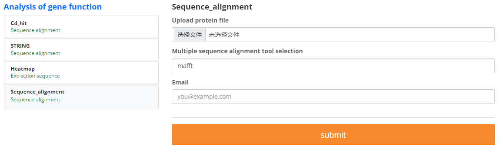

1.Sequence alignment refers to the alignment of DNA,RNA, or protein sequences according to similarity, in which similar bases/amino acids are aligned in the same column by inserting gaps in the sequences.
2.Three multi-sequence tools are available.
3.The sample file is as follows.
input_protein_file